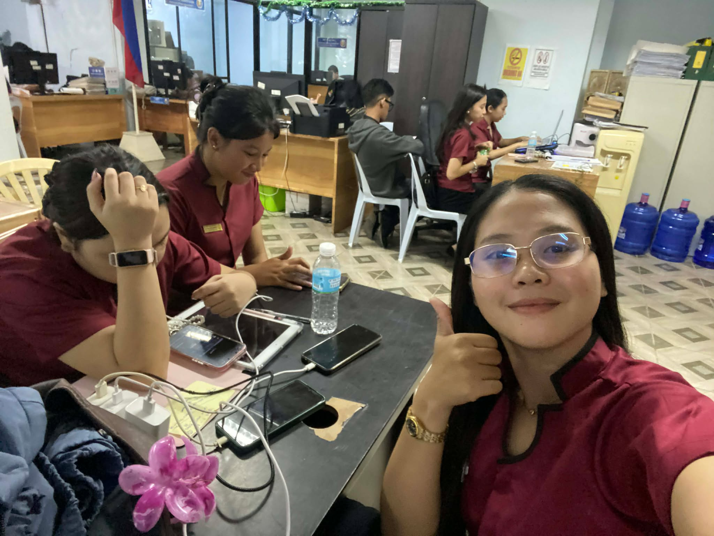
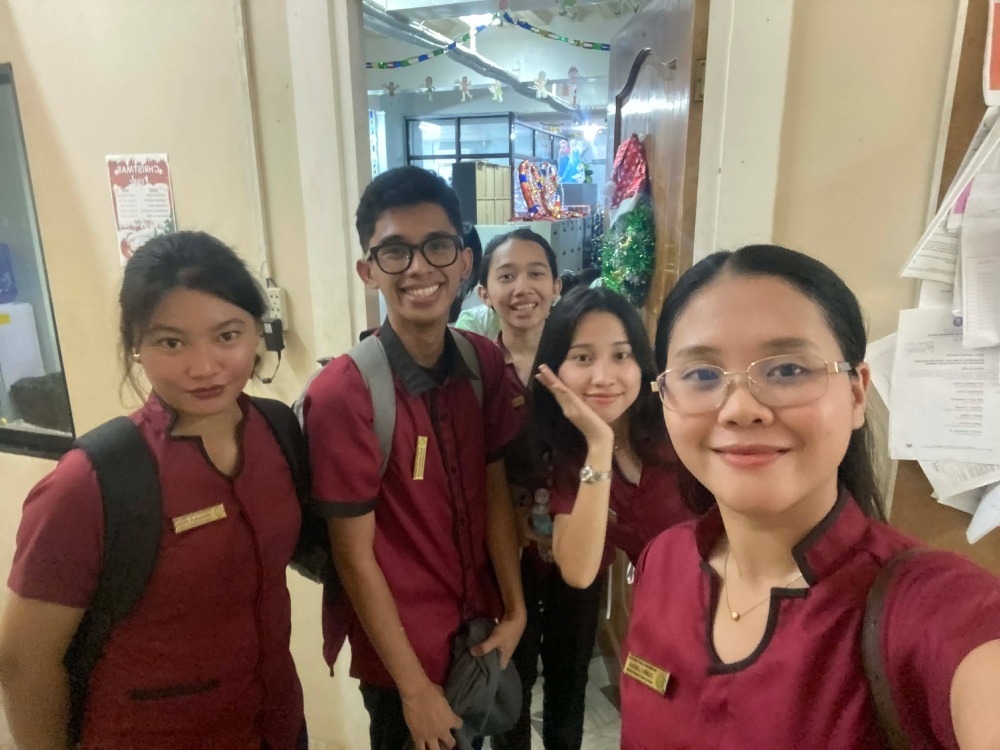
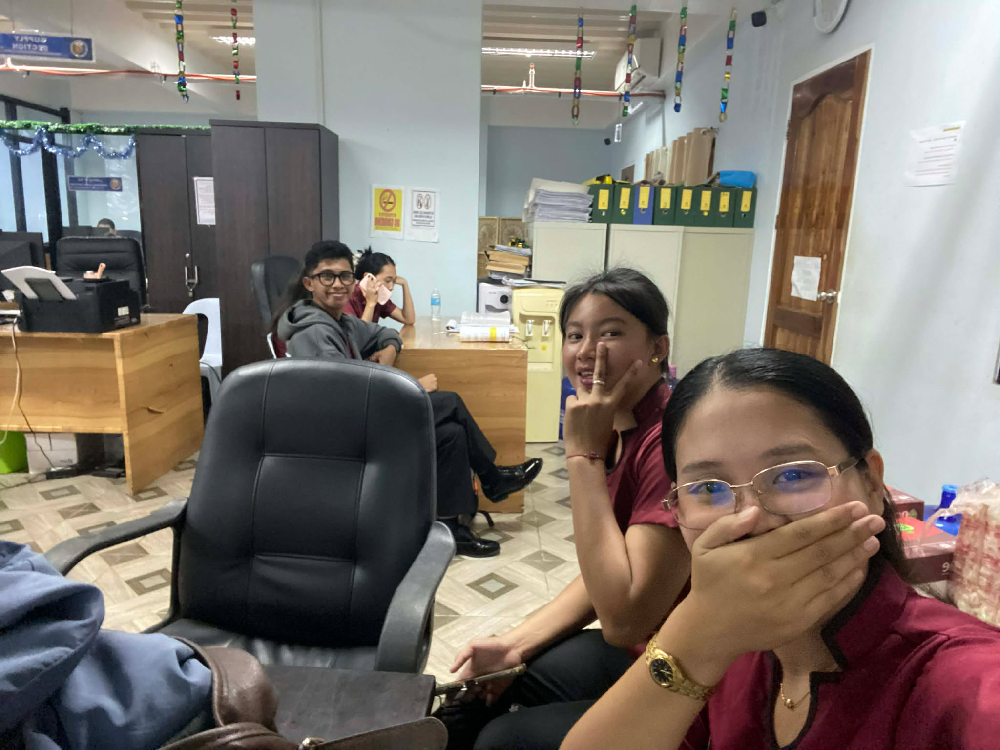

Tuesday, Dec 9
First Day Jitters
"Today marks the beginning of a long journey. The air feels different today, maybe because
of the anticipation.
I spent the morning organizing my workspace and sketching out the timeline for this journal.
It's important to start with intention."



🌸 🌸 🌸